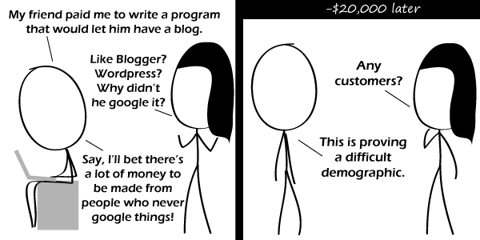

Comic JK 721
When I Feel Like It
⇤
<
?
>
⇥

⇤
<
?
>
⇥
Forum
.
RSS
.
Digg
.
Facebook
.
Reddit
.
Twitter
.
Stumbleupon
Enter your thoughts on number 721 here. Please, no spamming, trolling, phreaking, or word-of-mouth promotion. Reminds me of a radio ad I once heard for hearing aids... >>solar powered flashlights! >>T-Shirts at a Nudist Resort! >If you can hear this ad, you are one of the lucky ones. Please donate to the Charity of the Deaf today. >>why is a radio ad for hearing aids supposedly so bizarre ? news just in: deaf people usually have friends and family who can hear, and indeed are probably not completely deaf but have some degree of partial deafness... on a similar note, blind people *do* buy televisions... retailers who alienate deaf or blind people alienate those people's friends and relatives too... >>>People who use hearing aids aren't strictly deaf (as in cannot hear at all), anyway. The point of a hearing aid is to amplify sound to a level that a poorer ear can discern normally. No finite amount of amplification can fix a 0% hearing ability. Try some "search overload" ads. This is a good one! No puns, a degree of subtlety, and a broader reflection on life.